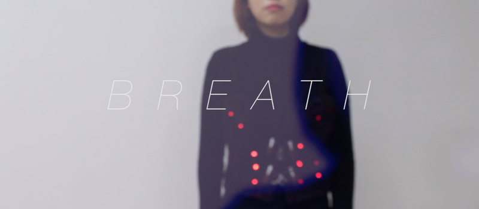
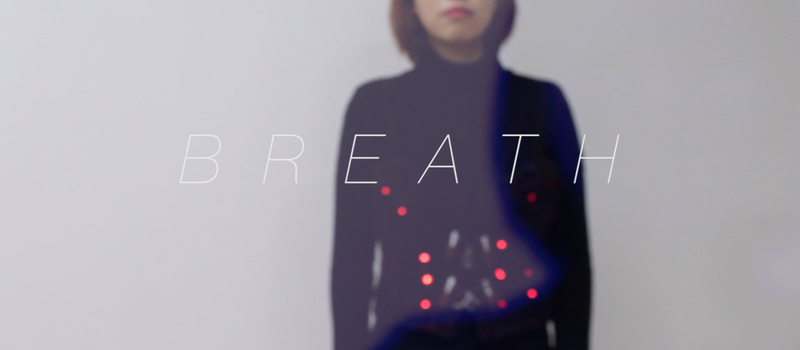

New Media Art
Wearable Design
Physical Computing
-
2016.
2017 ADAA
(Adobe Design Achievement Awards) Semifinalist 수상작.
Social Impact - Web / App / Game Design 부문
링크>>www.adobeawards.com
우리는 종종 우리의 일상 생활에서 '여자애처럼 ','남자애처럼 '과 같은 성 차별적인 발언을 접하곤 합니다.
하지만, 이 고정 관념은 단지 '사회적 성'이라고 불리는 편견을 반영하는 것일 뿐입니다. 그 편견들은 누군가를 일종의 '코르셋' 안에 가두고 성장을 멈추게 합니다.
그래서 우리는 성 고정관념에 대한 메시지를 표현하기 위해, 음성 인식을 사용하는 착용할 수 있는 코르셋을 만들기로 결정했습니다.
This corset is 'BREATH.'
We often encounter gender discriminative remarks in our daily lives, 'like a girl' and 'like a boy'.
However, this stereotype is merely a reflection of a person's prejudices, called 'social sex’. Those prejudices lock up someone into a corset, and make it stop growing.
So we decided to create a wearable corset that works with voice recognition to express messages about gender stereotypes.
1. BREATH 앱을 실행시키고, 블루투스 아이콘을 눌러 모바일 기기와 코르셋을 연결시킨다.
2. 음성인식 아이콘을 누른 뒤, (미리 입력된) 여성을 억압하는 말을 외친다.
"여자가 조신하지 못하게!"
1. Run the BREATH app and press the Bluetooth icon to connect the mobile phone and corset.
2. Touch the Speech Recognition icon, and then talk preset sentence that suppress the female.
"women should behave modestly!"
3. 구글 음성인식에 (미리 입력된) 여성을 억압하는 말이 인식되면, 코르셋이 점점 조여들며 착용자를 압박한다.
4. 코르셋이 완전히 조여들어 착용자를 압박하면, 부착된 LED가 상처처럼 붉게 빛난다.
3. If 'Google Speech Recognition' is aware of the (pre-populated) words that suppress women, the corset becomes tighter and compresses the (female) wearer.
4. When the corset is fully tightened, the attached LED glows red like a wound.
5. 정지 버튼을 누른 뒤, 다시 (미리 입력된) 여성 억압에 반대하는 말을, 앱에 인식시킨다.
"여자가 왜 조신해야 해!"
6. 여성의 억압에 반대하는 말이 인식되면, 점점 조여있던 코르셋이 풀어지며 LED가 빛을 잃는다. 상처가 사라지고 코르셋에 갇혀있던 여성은 자유롭게 숨을 내쉰다.
5. Push the stop button, and then talk preset sentence that opposed to female suppressed.
“Why should a woman be modest?”
6. If the word against the oppression of women is recognized, the tightening force of corset gets loosened, the wound dies away.
finally the woman extricate in the corset breath freely.
 
